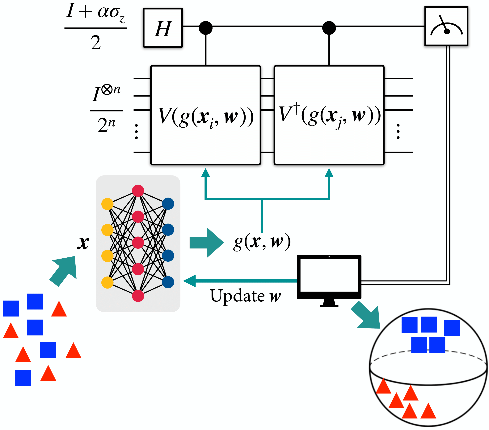
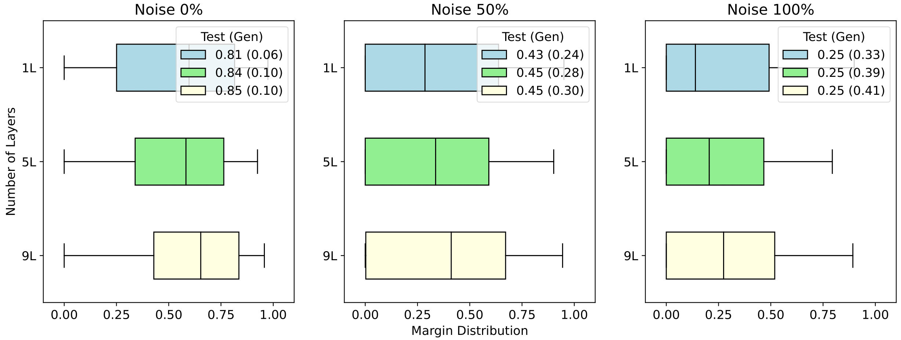
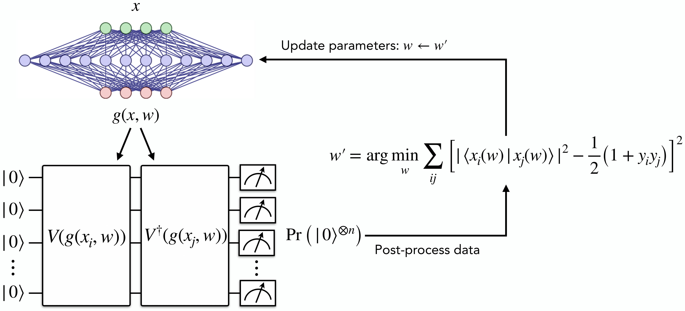
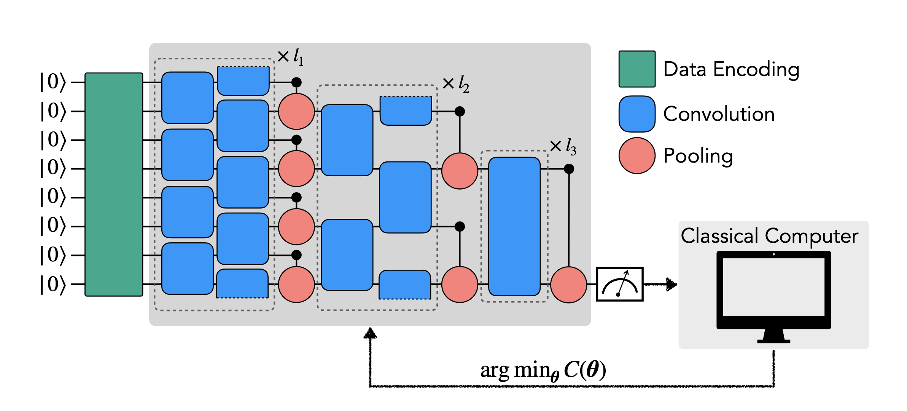

Quantum embedding · 2025
Neural Quantum Embedding via DQC1
Train a neural quantum embedding with deterministic quantum computation with one qubit, then compare classification performance.
Explore the code
Four guided demonstrations connected to my research. Each tutorial opens a worked example with explanations and code; the notebooks are available separately.

Quantum embedding · 2025
Train a neural quantum embedding with deterministic quantum computation with one qubit, then compare classification performance.

Generalization · 2024
Generate data, train a quantum model, and examine how margins relate to generalization.

Quantum embedding · 2023
Optimize a data embedding with a neural network and evaluate its effect on a quantum classifier.

Quantum classification · 2022
Build and test a QCNN for classical image classification, from embedding and circuit design through training.